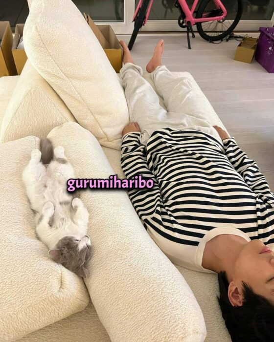

V BTS Main dengan Kucing Jennie BLACKPINK, Isu Pacaran Kian Santer
Published by Ulul Mafaza on 25//09/2022
 V BTS dan Jennie Blackpink
V BTS dan Jennie Blackpink
Pekalongan Kebenaran kabar Jennie BLACKPINK berkencan dengan V BTS semakin kencang. Terbaru, beredar foto V BTS sedang asyik bermain dengan kucing Jennie.
Foto itu tersebar secara online. Duo ini telah dikabarkan memang sedang berkencan saat ini.
Meskipun idola K-pop dan agensi masing-masing, yakni HYBE dan YG Entertainment, belum bereaksi terhadap rumor kencan ini,
sejumlah foto yang diduga menampilkan dua orang yang mirip V, yang bernama asli Kim Taehyung, dan Jennie telah muncul selama beberapa minggu terakhir.
Pada hari Sabtu, gambar lain bocor secara online, seperti dilansir dari News18, Minggu (25/9).
Dalam foto, seorang pria mirip V BTS terlihat sedang beristirahat di sofa putih sementara seekor kucing abu-abu dan putih tidur di sampingnya.
Fans mengklaim bahwa kucing dalam gambar itu milik Jennie.

V BTS berfoto bersama kucing milik Jennie BLACKPINK (Dok. Twitter @bobatealovr)
Foto itu muncul beberapa hari setelah dilaporkan bahwa Taehyung menghadiri pesta pribadi BLACKPINK untuk merayakan perilisan album baru mereka, Born Pink.
Outlet berita Korea Selatan JTBC melaporkan bahwa pesta itu berlangsung di Seongsu-dong Seoul pada 14 September.
Undangan hanya dikirim ke selebriti dan diklaim bahwa bahkan manajer bintang pun tidak diizinkan.
Daftar tamu termasuk aktor, penyanyi, dan banyak lagi. Laporan tersebut menambahkan bahwa agensi Taehyung dan Jennie, HYBE dan YG Entertainment, belum mengonfirmasi perkembangan tersebut.
Pernyataan dari agensi berbunyi bahwa mereka tidak dapat mengomentari hubungan tersebut. Sementara itu, apakah gambar yang bocor itu nyata atau tidak, penggemar khawatir gadget mereka diretas.
|
|